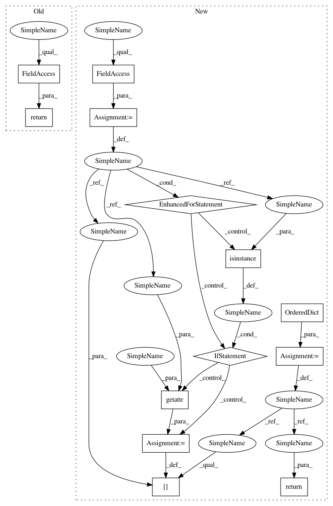

843d68642bd15d5737e3eb39abd76c748d6b52e8,models/base_model.py,BaseModel,get_current_visuals,#BaseModel#,34
Before Change
pass
def get_current_visuals(self):
return self.input
def get_current_errors(self):
return {}
After Change
// return visualization images. train.py will display these images, and save the images to a html
def get_current_visuals(self):
visual_ret = OrderedDict()
for name in self.visual_names:
if isinstance(name, str):
visual_ret[name] = getattr(self, name)
return visual_ret
// return traning losses/errors. train.py will print out these errors as debugging information
def get_current_losses(self):
errors_ret = OrderedDict()
In pattern: SUPERPATTERN
Frequency: 4
Non-data size: 13
Instances
Project Name: junyanz/pytorch-CycleGAN-and-pix2pix
Commit Name: 843d68642bd15d5737e3eb39abd76c748d6b52e8
Time: 2018-04-19
Author: junyanzhu89@gmail.com
File Name: models/base_model.py
Class Name: BaseModel
Method Name: get_current_visuals
Project Name: richzhang/colorization-pytorch
Commit Name: 843d68642bd15d5737e3eb39abd76c748d6b52e8
Time: 2018-04-19
Author: junyanzhu89@gmail.com
File Name: models/base_model.py
Class Name: BaseModel
Method Name: get_current_visuals
Project Name: junyanz/BicycleGAN
Commit Name: 07eeeac726b1b7f771e10909426663cc6bd0c477
Time: 2018-05-24
Author: junyanzhu89@gmail.com
File Name: models/base_model.py
Class Name: BaseModel
Method Name: get_current_visuals
Project Name: Zhaoyi-Yan/Shift-Net_pytorch
Commit Name: 8f6a6f153781d0908fb0904349aae844494026ea
Time: 2018-12-03
Author: yanzhaoyi@outlook.com
File Name: models/base_model.py
Class Name: BaseModel
Method Name: get_current_visuals